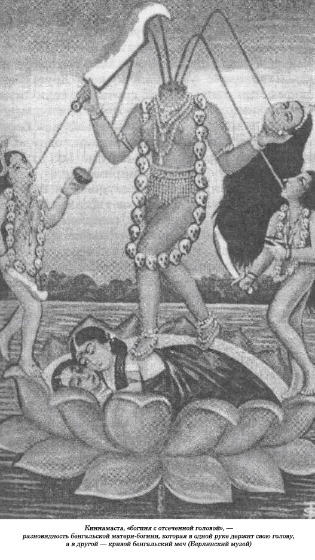

Сжечь вдову!
Первые христиане считали самоубийство единственной возможностью избежать греха, хотя за последние 1400 лет христианская церковь неумолимо учила, что самоубийство — это проклятое Богом дело. Такую практику до небес восхваляли писатели в Индии и Китае, ее традиционно почитали в Древнем Риме и Японии. Очень часто сами боги одобряли такой акт, не обращая никакого внимания на технические «трудности», связанные с гибелью кого-нибудь бессмертного. Так, в одном из песнопений индийских мифологических вед читаем: «Господь, создавший все живые твари, принес себя в жертву».Скандинавский бог Один покончил с собой, повесившись на ветке дерева. Он долго после этого раскачивался на холодном ветру. В Мексике, когда наступила кромешная темнота, два бога бросились в костер и вышли оттуда как новое Солнце и новая Луна, создав Пятый мир, начав эру ацтеков. Таким образом, их царство, само их новое существование, стали возможны только через гибель этих божеств.
Если справедливо представление, что человек отдает одну жизнь, чтобы тем самым спасти многих, то жертва в некоторых случаях может стать собственным палачом. Следовательно, наше первоначальное представление о жертвоприношении должно включать самоубийство, если только оно преследует собой религиозную цель. Принцип остается тем же, он не меняется. Неважно, примет ли человек смерть на алтаре от собственного удара мечом или от чужой руки. Само собой разумеется, самоубийство нельзя исключить из жертвоприношений как таковых, и его даже можно вполне рассматривать как их наивысшую форму, ибо чем меньше добровольности в ритуальных убийствах, тем меньше они нравятся богам. В этом прежде всего на себя обращает внимание жертва, принесенная Иисусом Христом. На практике довольно трудно провести четкую разграничительную линию между свободно выбранной смертью и смертью по принуждению — в некоторых обрядах наблюдаются элементы, сочетающие и то и другое. Например, если в Индии вдова поднимается на костер ради самосожжения, то она недвусмысленно совершает акт самоубийства. Если же женщина подвергалась сильному религиозному давлению со стороны родственников и у нее не оставалось иного выхода, а для этого подчас ее даже приходилось привязывать веревками к спине умершего мужа, то здесь налицо ритуальное убийство, даже если несчастная станет всех заверять, что она идет на такой шаг по собственной воле.
В Индии кроме «сати» существовало множество других форм религиозного самоубийства. Первые индийские священные писания упоминают о такой практике, хотя она, конечно, сильно пошла на убыль с распространением по всей стране буддизма в VI веке до н.э. Тогда людям было строго запрещено убивать себя, хотя в некоторых буддийских текстах такой акт иногда оправдывается. Только после упадка буддизма и возвращения на сцену индусских богов традиция ритуальных самоубийств возродилась с новой силой. В «Пуранах», этих религиозных текстах первых веков укрепления христианства, мы видим совершенно иное отношение к самоубийству — его даже восхваляют, если только этот акт проходит в священных местах и с выполнением определенных обрядов.
В упомянутых текстах авторы утверждают, что такое самоубийство — это не право жертвы, а предоставленная ей привилегия. Это не побег от нечистых, а вознаграждение за аскетическую жизнь, достижение высокого уровня совершенства. Главной причиной было желание одним махом прервать вечный цикл рождения и смерти, к которому приговорен каждый индус, так как самоубийцы, по их представлениям, не могли вернуться назад, на Землю. Такое правило распространялось и на жертву «сати». Вдова умершего человека, принявшая добровольную смерть на костре, уже никогда не возвращалась в этот мир. Другим предлогом была месть за причиненное зло. Духи самоубийц обычно вызывали у всех ужас, и они всегда преследовали тех, кто нанес им оскорбление. Если кредитор постился возле дома своего должника, то тот должен был поскорее заплатить ему деньги, если он только не хотел, чтобы заимодавец умер, а его дух не давал ему покоя на Земле. В Раджистане существовала некая секта «бардов», которые умели заставить людей выполнять свои требования — «трага». Бард обычно проливал собственную кровь или кровь своего родственника, призывая гнев богов на головы злоумышленника, упрямство которого привело к такой своеобразной жертве. Иногда целый отряд бардов окружал дом обвиняемого, и они начинали обряд голодания, заставляя и всех обитателей дома голодать вместе с ними, что продолжалось до тех пор, пока не были удовлетворены все их условия. Дух самоубийц бардов считался священным, и именно он внушал величайший ужас. «Трага», таким образом, превратилась в способ вымогательства денег.
Существовало немало специальных мест, предназначенных для принесения себя в жертву. В одном из текстов «Пуран» говорится, что тот, кто расстался со своим бренным телом в Пехоа, на северном берегу реки Сарасвау, прочитав предварительно все полагающиеся по такому случаю молитвы, уже никогда не умрет. В другом тексте рекомендуется совершать самоубийства в Каси, в районе Бенареса. Этот древний город, по существу, был Меккой для паломников со всей страны, которые были убеждены, что если они добровольно умрут в Каси, то прервется их жизненный цикл и они наконец не будут вовлечены в череду бесконечных рождений. Сам бог Шива предлагал спасение тем, кто отважился умереть в этом месте, и он даже нашептывал им на ухо свою молитву. Другим священным местом было слияние двух рек: Ганга и Ямуны, здесь, как считалось, было удобнее всего полоснуть себя ножом по горлу.
Для ритуальных самоубийц предлагался широкий выбор способов покончить с собой. Можно было утонуть в реке, броситься вниз головой с высокой скалы, сжечь себя или уморить голодом. Смерть от изнеможения была одним из наиболее распространенных методов. Будущая жертва отправлялась глубоко в Гималаи и взбиралась по их крутым склонам до тех пор, пока силы не оставляли ее и она не падала замертво на землю. Некоторые предпочитали умереть, зарывшись там поглубже в снег. Члены секты джейн специализировались на медленном умирании, и смерть от длительного поста считалась излюбленным методом. Существовал очень хороший способ для продолжения предсмертной агонии. Самоубийца ложился на медленно тлеющий костер из коровьего навоза или же просил подвесить его вниз головой над ним, чтобы ему было удобнее слизывать языки пламени. Некоторые члены секты отрезали от себя кусочки плоти, предлагая поклевать их хищным птицам. Подобная методика горячо рекомендовалась в религиозных текстах, составленных в период между XIII и XVIII веками. Можно привести несколько примеров ритуального самоубийства, совершенного великими людьми. В период существования империи Гуптов (основана в 320 г. н.э.) появилась поэма, описывающая гибель царя Аджи, который добровольно утонул в том месте, где сливаются две священные индийские реки — Ганг и Сарайяк, после чего тут же вознесся на небо. Царь Кумарагупта, более поздний правитель Гуптов, взошел в 554 году на мучительный костер из коровьего навоза. Анандапала, сын правителя Пенджаба, в 1065 году бросился в костер после того, как потерпел поражение в бою. В полном соответствии с традицией великий индусский философ VIII века Кумарила добровольно сгорел на костре, а ученый и государственный деятель Хемакандра уморил себя голодом в 1172 году. Существует множество историй о мужчинах и женщинах, которые по собственному желанию расстались с жизнью, занимаясь божественным созерцанием, отказываясь принимать пищу и пить воду, пока не наступала смерть. В XV веке в Индии пали все барьеры на пути к самоубийству. Вначале это было привилегией только высшей касты браминов, ну а теперь такое право предоставлялось члену любой касты. Массовые самоубийства вошли в моду, и когда царь Нарсинга в центральной провинции умер в 1516 году, то пятьсот мужчин и женщин, его верных подданных, бросились в костер. О другом массовом самоубийстве сохранились сведения, высеченные на каменном столбе в Халебиде, штат Майсур, на юге Индии. Он был поставлен в честь генерала Кувары, после гибели которого тысяча преданных ему воинов вызвалась разделить его судьбу. На этом столбе можно увидеть каменные изображения воинов, которые мечом отрубают себе руки, ноги и даже голову.
Обряд «джаухар», когда все племя, как мужчины, так и женщины, расстаются со своей жизнью всего за несколько часов, чтобы тем самым избежать всех ужасов, связанных с пленением, — весьма древний обычай. Он восходит к своим истокам около 1000 г. до н.э. Спустя семьсот лет после этого Александр Великий в ходе своей индийской кампании разорил дотла Агаласси, но оставшиеся в живых его жители, как говорят, около двадцати тысяч человек, подожгли то, что осталось от их столицы, а сами с женами и детьми бросились в огонь. Подобные обряды наблюдались в Индии и после завоевания ее династией Великих Моголов. В 1533 году был осажден город Читор. После того как все отважные воины пали в бою и исход сражения был предрешен, по особому сигналу из бочек в щели скалы был высыпан порох. В огне взрыва погибли тринадцать тысяч женщин во главе с матерью царя. «Героини» таких массовых ритуальных убийств пользовались, как и жертвы «сати», всеобщим уважением, и им поклонялись в храмах. Об их героических поступках вспоминали на религиозных праздниках в Раджистане, а паломники приходили к местам их гибели.
Многие формы ритуального самоубийства существовали без особых трудностей до последнего столетия, и их даже описывали очевидцы-англичане. Наиболее знаменитой из всех была церемония Джаганата, проводившаяся ежегодно в Пури в честь бога Вишну, которая известна и под другим названием — Джаггернаут. Один английский очевидец, Г. Т. Колбрук, сообщает, что в начале XIX века собственными глазами видел, как люди бросались и гибли под колесами громадной колесницы, на которой доставляли изваяние бога Джагганаты. Хотя такие обряды все еще существовали, они не вызывали особого восторга у английских властей и вскоре были запрещены.
Люди бросались вниз головой в Ганг и в других священных местах, чтобы тем самым добиться особой привилегии при следующем их рождении. Человек, выбравший для себя такую смерть, прежде проходил через ряд омовений, повторяя при этом «мантры», или молитвы. Потом он бросался в воду с лодки или забредал на глубину с привязанными к рукам и ногам глиняными сосудами, которые утаскивали его под воду, когда наполнялись до краев водой. Особо добрым предзнаменованием считалось, если до того, как жертва утонет, ее уволочет в зубах крокодил.
На реке Нарбада в центральной провинции есть остров, на котором до 1824 года религиозные фанатики разбивались о скалу. Она, по преданию, считалась обиталищем супруга питавшейся человеческим мясом богини Кали. Люди также бросались вниз головой в пропасть в горах Нармада, исполняя давно принятые на себя религиозные обеты. А.Б. Кейт описал этот странный обряд, так как для основных действующих лиц, как и для множества зрителей, это была причина не кручины и печали, а радости и веселья. «На этом месте до восхода новой луны собирались толпы народа в день, назначенный для церемоний, которая пользовалась всеобщим одобрением, так как жертва должна была во всеуслышание объявить о своем намерении. Потом она в сопровождении оркестра отправлялась в близлежащие деревни просить милостыню».
Другим обычаем, дошедшим до XIX века, было захоронение живыми прокаженных, которые в результате получали право на собственную могилу, в чем им прежде всегда отказывали.
Англичане, нужно сказать, весьма робко вмешивались в такую практику, и только в конце XIX века решили рассматривать любое ритуальное самоубийство как преступление, в результате чего эти акты утратили большую часть своей религиозности. В начале нашего столетия, однако, монахи и монахини секты джейн время от времени морили себя голодом, соблюдая бесконечный пост до смерти. Англичанам приходилось также вести упорную борьбу с самосожжением вдов. Индийское слово «sati», или «suttee» в английской транскрипции, означает на древнем санскрите «целомудренная женщина». Но этот термин применялся по отношению к тем на самом деле сверхцеломудренным женщинам, которые отваживались добровольно пойти на смерть со своим умершим мужем, хотя они не всегда это делали с помощью самосожжения.
Принесение в добровольную жертву вдов пользовалось такой популярностью в Индии, что несколько измененное слово «сати» стало употребляться для обозначения подобного обряда и в других странах. Обычай зародился еще в каменном веке и потом проник на все континенты. Фараона Аменхотепа II (1450— 1425 гг. до н.э.) провожали на тот свет четыре его живые жены. В Греции жена Капанея, царя аргивян, была сожжена на костре вместе с мужем. Такой обычай соблюдали в языческих скандинавских странах и среди славян в Восточной Европе. В дохристианской Польше еще в X веке жены довольно часто умирали одновременно с мужем. Арабы-путешественники утверждают, что в Южной России, если у человека было три жены, любимую душили первой, после чего сжигали вместе с трупом мужа на костре.
В Азии обряд «сати» не ограничивался только одной Индией. На острове Бали вдов проклинали, если те отказывались разделить судьбу своих мужей и отправиться вместе с ними в мир иной. Балийцы считали главным источником зла ведьму-вдову, которую называли «рангда»,— она, по преданию, пожирала детей. Поэтому любое вдовство рассматривалось как весьма опасное состояние. Вдовы умирали вместе с мужьями у народности майори в Новой Зеландии, на островах Фиджи и во многих районах Африки. В Дагомее, например, в Западной Африке, похороны царя Аданзу в 1791 году завершились принесением в жертву сотен людей. Его многочисленные жены рассаживались вокруг трупа царя в соответствии с их рангом при дворе: главные жены, затем жены «дня рождения» — их царь обычно брал в жены в день своего рождения — и, наконец, самые красивые и молодые, так называемые «жены леопарда». После чего все они принимали яд.
В Китае обряд «сати» появился даже раньше и существовал гораздо дольше, чем в Индии. Широкомасштабные похороны, когда вместе с умершим правителем предавали земле и сотни живых людей, известны еще с 1500 г. до н.э. Как письменные источники, так и раскопки свидетельствуют о том, что массовые захоронения живых людей в царских гробницах существовали даже во времена Конфуция.
В последние века последнего тысячелетия до рождества Христова все еще был широко распространен обычай хоронить живых наложниц с мертвыми монархами, а захоронение живых с мертвыми в одной могиле оказалось настолько популярным в Китае, что в китайской драматургии до сих пор существует особое действующее лицо, которое олицетворяет собой обряд самоуничтожения живого человека, вознамерившегося отправиться с умершим в мир иной. Такого персонажа можно обнаружить даже в современных драматических текстах.
Голландский ученный Й. де Гроот утверждает, что в сочинениях эпохи династии Хань (206 г. до н.э.—220 г. н.э.) и ее непосредственных преемников приводится такое великое множество примеров ритуальных самоубийств жен и дочерей монархов, желающих сопровождать их в потусторонний мир, что чтение просто навевает скуку своим однообразием. Тем не менее он приводит несколько примеров этого обряда и говорит, что такая практика продолжалась и позже, в эпоху династии Минь в XIV веке (1368—1644 гг.). Первый император династии Минь умер в 1398 году. Нам неизвестна судьба его жены, но мы доподлинно знаем, что за ним в иной мир отправилось множество придворных дам и его наложниц. Одно самоубийство вызывало другое. Вслед за преданными женами в могилу правителя живыми отправлялись его прислуга, рабыни, которые тоже добровольно выбирали смерть. Многие вдовы убивали своих детей ради этого.
Вдовы в Китае действовали вполне сознательно, и тысячи из них совершали такой акт, который никогда не был следствием приступа отчаяния или же страха перед нуждой. Если бы это было так, то все их действия никогда не были бы запротоколированы историками и не сопровождались бы такими высокими похвалами. Акт самосожжения тщательно готовился и совершался по зрелому размышлению. Китайская «сати» обычно перед смертью вызывала духов своих предков и умоляла их принять и ее душу; по этому поводу она надевала на себя лучший наряд, чтобы быть попривлекательней, когда предстанет перед ними после своей кончины. Такой акт пользовался всеобщим одобрением со стороны широкого общественного мнения и моралистов, которые не уставали его восхвалять.
Методы ритуального самоубийства в Китае были куда более разнообразными, чем в Индии, где самосожжение на костре было почти единственным правилом. Большинство китаянок либо вешались, либо вспарывали себе горло, но некоторые из них предпочитали яд или бросались в пропасть. Известны случаи, когда жены кидались в горящий дом, в котором по неосторожной случайности оказывались их мужья или родственники; многие бросались на угли костра, разведенного для сжигания трупа их мужа. Вдовы иногда топились в реке или в море.
Всего еще столетие назад в Китае самой распространенной жертвой «сати» становилась публичная казнь через повешение, но расходы на такой вид ритуального убийства бывали, как правило, настолько высоки, что это «удовольствие» могли себе позволить только очень богатые семьи. Дата такой казни сообщалась по всему городу с помощью расклеенных плакатов. Вот что рассказывает о таком обычае де Гроот:
«Перед наступлением торжественного великого дня главное действующее лицо предстоящего спектакля, «сати», облачается в свой самый лучший наряд и, сидя в паланкине, совершает объезд всех членов своей семьи, друзей, знакомых, чтобы они вдоволь полюбовались ее пышными одеяниями. Ее все радушно поздравляют, превознося до небес. По приказу властей и за счет ее семьи на выбранном месте возводится платформа, которую старательно украшают яркой тканью и фонариками. «Сати» сидит на стуле или платформе, либо рядом с ней, в своем прекрасном наряде, выбранном ею лично для своего ухода в царство теней. Она в полной неподвижности принимает самые высокие по чести в Китае от приближенных Сына Неба, а также простолюдинов. Когда все приглашенные собирались, их угощали чаем и сладостями, после чего самый старший по званию мандарин приглашал женщину подняться на платформу. Через несколько минут она, поправив как следует петлю на шее, отправлялась в вечность, выбивая из-под себя ногами табуретку. После окончания церемонии мандарин уезжал, и толпа постепенно расходилась. Несколько представителей знати, прибывших сюда на своих паланкинах, чтобы добавить пышности героическому самоубийству, совершенному в их присутствии, обходили всех родственников и близких усопшей, воздавая им всяческие похвалы и льстиво напоминая об императорских милостях, которые могут за этим актом последовать...»
Представителей знати и мандаринов, присутствовавших на этом ритуале, щедро одаривали. В течение нескольких дней их приглашали на праздничные обеды, которые стоили немалых денег для членов семьи самоубийцы. Присутствие важных персон на церемонии являлось их негласным одобрением отважного поступка женщины. Даже иностранные газеты сообщили об одном случае, произошедшем в 1879 году неподалеку от китайского порта Фу-че-фу. Иногда подобные акты получали официальное одобрение и погибшим ритуальным жертвам посвящались храмы Изданный в 1832 году генерал-губернатором провинции Хукван указ недвусмысленно подчеркивал признаваемую властями природу такого деяния. Подобно англичанам в Индии, которые долго не могли собраться с духом, чтобы запретить обряд «сати», китайское имперское правительство постановило, что для него обязательно требуется официальное разрешение. Прежде вдове нужно было обратиться в Совет по ритуалам и обрядам. Если ее заявление получало одобрение, то местным чиновникам предписывалось выделить ей тридцать монет для сооружения мемориальных ворот в ее честь. Практически такое разрешение было очень трудно получить, так как власти давали его скрепя сердце, и мандарины обычно отклоняли такие прошения, давая «добро» только очень немногим представительницам богатых семей, главным образом просителям из числа их ближайших приближенных и коллег.
В Индии обряд «сати» имеет долгую историю. Он был введен Александром Великим в 326 г. до н.э., и греческий историк Страбон тоже пишет в своих сочинениях об обряде «сати». Первый описанный случай в индийских текстах относится к 316 году, когда одну из двух жен индусского генерала его брат привел на погребальный костер. О ней говорится, что она была вся «светла и очень радостна, даже когда языки пламени начали лизать ее тело».
К 400 году самосожжение вдов вошло в моду, особенно в Бенгалии. Дальнейшее совершенствование этого обряда всячески поощрялось индийскими священными писаниями, а «Пурани бриддхарма», написанная в период между 1200—1400 гг. н.э., всячески рекомендует его в самых привлекательных словах: «Жена, преданная своему мужу и следующая за ним и после его смерти, очищает его от великих грехов. Большего по достоинству поступка для женщины не существует, потому что в таком случае ей придется постоянно разделять на небесах компанию своего любимого мужа». Протесты в связи с таким позорным обычаем стали поступать гораздо позже, а этот обряд «сати» крепко укоренился в индуистской религии. Легенда даже утверждает, что четыре жены бога Кришны сожгли себя на костре, приготовленном для трупа мужа.
В бенгальской литературе можно найти еще больше самых разнообразных примеров «сати», которые неизменно удостаиваются самых высоких восхвалений. Великий законодатель этой провинции XVI века Рахунандан рекомендует в своих трудах воспользоваться таким обрядом всем вдовам поголовно. Он оставил свое описание, как именно следует выполнять такой обряд. Прежде всего нужно, чтобы как можно сильнее разгорелся погребальный костер, только после этого вдова, распевая религиозные гимны, может бросаться в огонь.
Не могло быть и речи о привязывании жертвы к умершему веревкой, как это происходило значительно позже. Вся суть такого обряда заключалась в том, что женщина шла на него добровольно, по собственному, искреннему желанию. В литературе этой эпохи нигде нет никаких упоминаний о насильственной смерти жертвы.
Соблазн вечного блаженства и счастья как награды для «сати» объясняется индуистскими верованиями, что мужчина для жены живой бог и если жена сжигала себя ради него, то они будут непременно вместе в загробной жизни. Так как речь шла лишь о добровольном принесении себя в жертву, многие индийские семьи даже иногда хвастались числом своих «сати». Иногда, как это делалось в Китае, на месте казни возводились небольшие пирамиды или холмики в честь жертв. В более позднее время возросло социальное давление, и в поведении обреченных на гибель женщин появлялись темные, малоприятные моменты. Многие вдовы предпочитали умереть, чем вести постылую жизнь в полном одиночестве, которая выпала на их долю. Если матери выражали желание сжечь себя, то их сыновья таким образом освобождались от всех тягот, связанных с их содержанием. Они сразу же становились наследниками всего их имущества. Считалось, что вдова приносит неудачу и зло, и поэтому ей запрещалось даже посещать семейные торжества. Она, оставаясь пока членом семьи мужа, не имела права возвращаться к своим родителям.
Родственники со стороны мужа бдительно следили за ней, чтобы не допустить нарушения ее «целомудрия», что могло поставить под угрозу душу ее умершего мужа. Даже слуги старались избегать ее.
Заккудин Ахмед, автор, который много писал об обрядах «сати» в Бенгалии в XVIII веке, оставил нам описание типичной ритуальной церемонии. После смерти своего мужа вдова объявляла всем о своем решении стать «сати». После этого она надевала свой лучший наряд, ее усаживали в паланкин и торжественная процессия носила ее по улицам в сопровождении неумолкающего оркестра. Прощаясь со своим домом, она патетическим жестом окунала руку в красную охру, оставляя отпечаток своей ладони на белой стене. По пути она раздавала чуть поджаренный рис и фрукты, которые у нее из рук жадно выхватывала толпа, чтобы сохранить в качестве сувенира. Погребальный костер обычно разводили на берегу реки, предпочтительно на берегу священного Ганга. По приезде к месту своей казни вдова погружалась для омовения в воду, после чего переодевалась в сухую одежду. Потом отдавала все свои драгоценности возглавляющему церемонию брамину и облачалась в белые одежды. Жрецы втирали в ее ступни лак, прикладывали окрашенный хлопок к ее рукам, перевязывали его красной ленточкой. Потом начиналось чтение молитв, и вдова обращалась к восьми властителям сторон света, и среди них к Солнцу, Луне и богу Войны, чтобы те удостоили ее своим присутствием на этом церемониале. Она трижды обходила костер под песнопения и молитвы браминов, которые на все лады расхваливали ее поступок. Попрощавшись со всеми, она поднималась на приготовленную платформу, садилась там, укладывая голову мертвого мужа у себя на коленях, после чего ее старший сын подносил к хворосту первый факел. Сразу же все в толпе принимались громко кричать, а барабанщики бить изо всех сил в свои инструменты, чтобы таким образом приглушить ужасные вопли умирающей жертвы.
Хотя во всем мире существовало большое разнообразие ритуалов «сати», этот в Индии был обычным, стандартным. Вдова сгорала на одном костре с умершим мужем. Другая его форма применялась в случаях, если муж умирал, находясь вдали от дома, или если его жена в момент его смерти оказывалась беременной. Ее обычно сжигали потом, одну, а в руках она держала что-нибудь из личных вещей своего супруга, например его чалму. Бывали случаи, когда вдовы сжигали себя на костре спустя пятнадцать лет после кончины мужа. Другие, напротив, слишком торопились, и далеко не единственная неверно информированная жена убивала себя, полагая, что ее муж умер в далекой стороне, всего за несколько часов до его благополучного возвращения. Иногда в пламени костра погибали не только жены, но и наложницы, с которыми муж хотя бы некоторое время сожительствовал, а также и его слуги-мужчины. Иногда мать сгорала вместе с сыном. Так, женщин касты ткачей обычно закапывали живыми в могиле мертвого мужа. В таких случаях могилу обычно выкапывали возле реки. Вдова спускалась в могилу, где уже лежал ее муж, а старший сын, ловко орудуя лопатой, неторопливо засыпал мать землей, пока под толстым слоем не скрывалась ее голова. Обряд «сати» был доступен для женщин любого возраста. Так, в 1812 году со своим мужем была сожжена его четырехлетняя «жена». В Мидрапоре же, в Северной Калькутте, в 1825 году на погребальный костер, пошатываясь, взошла столетняя «вдова».
По мере того как в конце XVII и начале XIX веков такой варварский обычай все сильнее укоренялся в стране, особенно в Бенгалии, он сопровождался все большими злоупотреблениями. Многих детей насильно оставляли сиротами, а других заставляли сжигать себя заживо. Так, к примеру, поступали с так называемыми «маленькими невестами». Их привязывали к полуистлевшему трупу супруга и вместе сжигали. Иногда из одиночного жертвоприношения обряд «сати» превращался в массовое ритуальное убийство. Это часто происходило потому, что родители жертвы хотели повысить свой социальный статус с помощью расчетливого брака с представителями высшей касты кулинов в Бенгалии. Мужчины из знатной семьи сделали подобные браки для себя настоящей профессией, торгуя собой направо и налево, продаваясь девушкам и женщинам за деньги. Мало кто из таких «жен» подолгу жил с этим мужчиной или даже вообще встречался с ним после женитьбы — до наступления этого страшного дня казни, когда их тащили к погребальному костру. Например, в 1799 году вместе с останками одного брамина в Надии, неподалеку от Калькутты, были сожжены тридцать семь женщин. К тому времени, когда наконец костер как следует разожгли, только три из них оказались на месте. Остальных разыскивали в течение трех суток, в продолжение которых костру не давали погаснуть.
В Бенгалии вошло в обычай предварительно связывать веревками жертву, а родственники вдовы вместе с забавляющимися таким зрелищем зрителями стояли рядом с несчастной, подталкивая ее в огонь, а если веревки перегорали и обожженная и изуродованная женщина выбегала из огня, ее хватали и отправляли обратно. Для этого пользовались палками зеленого бамбука, которые быстро не воспламенялись. Однажды темной ночью жертве удалось убежать из горящего костра и спрятаться в кустах неподалеку. Но ее вскоре обнаружили, а ее сын лично швырнул мать на раскаленные угли. Был отмечен и такой случай, когда женщине удалось избежать костра, но ее разгневанный отец позвал на помощь родственников, которые забили ее бамбуковыми палками.

Англичане вначале относились к таким казусам с полным безразличием, и только в конце века у них все же проснулась совесть. «Восточно-индийская компания» в начале XIX века выселила большинство индусов из столицы Бенгалии Калькутты, этого признанного центра культа «сати», но он получил дальнейшее распространение по всему субконтиненту, особенно в таких больших городах, как Бомбей и Мадрас. Маркиз Уэллсли, генерал-губернатор и брат герцога Веллингтонского, хотел было запретить обряд «сати», но его вовремя предостерегли, напугав возможностью возникновения в связи с таким запретом мятежа. Ничего не предпринималось в этой связи до 1812 года, когда это дело было передано в Верховный суд. В результате судебного разбирательства этот обряд не только не был запрещен, но еще и наделен законным статусом. Правда, теперь вдову не могли сжечь на костре без правительственного разрешения. Если все необходимые формальности соблюдались и разрешение выдавалось, то на такой церемонии требовалось обязательное присутствие полицейского офицера-индуса, который лично должен бы удостовериться, что жертва не подверглась воздействию наркотиков, что она совершеннолетняя, не беременна и поступает так по собственной воле. В этом отношении англичане лишь выдирали, по сути, один листок из законоуложения бывших мусульманских правителей Индии, которые разработали систему предварительных условий для выполнения такого обряда. Вскоре после этого англичане запретили практику «сати» в центре Калькутты — теперь обряд можно было проводить только на окраине.
Обряд «сати» все равно расширял свои масштабы, а предпринимаемые властями меры ограничивались лишь составлением дотошно-подробных протоколов на месте казни в лучших традициях Уайтхолла. В 1817 году ими было отмечено только семнадцать случаев самосожжения вдов, но в период между 1815 и 1828 годами только в одной Бенгалии на костре были сожжены 8134 вдовы, включая 511 в самой Калькутте.
В некоторых, весьма редких случаях британские офицеры вмешивались в такую церемонию, чтобы либо прервать ее, либо вообще прекратить. Еще в 1679 году Джоб Чарнок, один из основателей Калькутты, выхватил из пламени полыхающего костра, в котором горел труп мужа одного брамина, его прекрасную жену, он на ней потом женился, и они прожили счастливо целых четырнадцать лет. У такого странного происшествия не было продолжения до 1806 года, когда Чарльз Хардинг, англичанин из гражданской службы в Бенаресе, столкнулся точно с такой же острой проблемой. Красавицу-жену одного брамина уговорили взойти на костер спустя почти год после кончины мужа. Для этого развели большой костер на берегу, в двух милях вверх по течению от Бенареса, со стороны реки Ганг. Вдова до конца не была уверена в своих силах и, как только увидела полыхающее пламя, вырвалась из вцепившихся в нее рук и бросилась в реку. Люди бежали вслед за ней по берегу, а течение уносило ее все дальше к городу Бенаресу, где полицейские в лодке выловили несчастную жертву и привезли ее обратно. Она почти лишилась чувств из-за пережитого приступа отчаяния, страха и от долгого пребывания в воде. Перепуганную, озябшую женщину доставили к Хардингу, но весь город Бенарес яростно негодовал из-за побега вдовы брамина, которой удалось избежать погребального костра. Тысячи жителей окружили его дом, во дворе его ждали все почетные горожане, пытавшиеся уговорить его выдать ее. Среди них находился и ее родной отец, заявивший, что не станет больше содержать свою дочь — лучше пусть ее сожгут на костре, он все равно больше не пустит ее к себе на порог. Жуткие вопли толпы уже начинали действовать на нервы молодому человеку, который в эту тяжелую минуту до конца осознал, какую ответственность взваливает он на свои плечи в таком городе, как Бенарес, с населением триста тысяч человек, городе, в котором то и дело вспыхивали кровавые мятежи. Наконец его осенило.
«Ваш Бог явно отказался от своей жертвы, — обратился он к толпе. — Ее отвергла даже священная река. Она не плыла, ее несло само течение, а за ней бежала громадная толпа, и все это видели. Она не оказывала сопротивления, но и река ее не приняла. Если бы женщина была желанной жертвой, то после того, как ее коснулся огонь, священная река должна была ее поглотить, но этого, как видите, не случилось...»
Такое объяснение пришлось всем по душе. Отец сказал, что после таких веских аргументов он вернет в свой дом дочь, а довольная толпа постепенно рассеялась.
Только в 1829 году обряд сжигания на костре вдов в Бенгалии был официально запрещен лордом Уильямом Бентинком. Однако перемены в укладе жизни утверждались очень медленно, и обряд «сати» все еще существовал во владениях раджей, на что англичане могли влиять лишь косвенным путем. Во многих карликовых государствах престиж властителя часто определялся количеством женщин, сожженных живьем у него на похоронах. Число холостых залпов из орудий, когда он посещал генерал-губернатора, было слабым утешением и в счет не шло. Напряженная обстановка в стране достигла наивысшей точки в 1833 году, когда британское общественное мнение было просто поражено подготовкой к похоронам раджи Идара, чей труп был сожжен на костре вместе с семью живыми женами, двумя наложницами, пятью служанками и одним личным слугой. Британский резидент в Идаре и Ахмад-нагаре был исполнен решимости впредь не допускать массовых ритуальных расправ, но тут ему сообщили, что в бозе почил и раджа Ахмаднагара. Так что он не успел предпринять никаких решительных действий. Только после того, как на костре в Ахмаднагаре с его трупом сгорели пятеро его живых жен, он направил туда свои войска с артиллерийским подкреплением. После коротких боевых стычек резиденту удалось вырвать у сына раджи твердое обещание больше не проводить обряда «сати» ни для себя самого, ни для своих наследников...
Существует еще и японская разновидность ритуальных убийств, которая возведена в настоящий культ в драматических пьесах театра Кабуки, благодаря которому он стал известен во всем мире.
На Западе такой обряд называют «харакири», что дословно означает «вспарывание живота», — слово, которого впору стыдиться каждому воину-самураю. Правильный термин для его названия — «сеппука». Для японцев слово «сеппука» исполнено особой тайны, которая связана с древним представлением о животе как вместилище разума. Поэтому, совершая «сеппуку», отважные мужчины тем самым очищали себя от греха, за что, собственно, они и умирали. Но хотя Японии этот ритуал принес широкую известность в мире, подобные церемонии наблюдаются повсюду в Азии, а Япония составляет только незначительную часть ее обширной территории. Некоторые племена в Восточной Сибири проявляли удивительную склонность к самоубийству, а самоеды, например, открыто утверждали, что самоубийство — это «акт, угодный Богу».
Синтоизм, который позже в своем лоне создал такой обряд, как «харакири», процветал задолго до того, как китайцы принесли буддизм в Японию, еще в VI веке н.э. Такой первобытный синтоизм основывался на почитании предков и природы. Тысячелетие спустя он почти совершенно исчез из-за одерживаемого повсюду триумфа буддизма. Но синтоизм познал свое возрождение. Эта отразилось на двух краеугольных принципах: мистическая преданность императору и накопление высоких моральных ценностей и добродетелей, оставленных в распоряжение потомков ушедшими из жизни предками. Эти два принципа были, конечно, взаимосвязаны, ибо моральные ценности в основном зависят от культа, воздаваемого императору, который считался не только представителем Бога на Земле, но еще и занимал вместе с членами своей семьи серединное положение где-то между Богом и человеком. По традициям синтоизма, император не имел права когда-либо появляться на публике, и даже из числа привилегированных вельмож, которым дозволялось слышать его голос, только совсем немногие понимали его, так как он в таких случаях говорил на малопонятном священном наречии древнего японского языка. Такая неустанная погоня за добродетелями вызывала у человека презрение к этой земной жизни, заставляя его глубоко верить, что он непременно соединится со своими предками в раю. Во время возрождения религии синтоизма возникло движение самураев — сплоченного, хорошо организованного общества, основанного правителями Токугава сегунами, которые впервые пришли к власти в начале XVII века и правили Японией до 1867 года. Их правление известно в истории под названием «период Эдо», он получил название от столицы страны, которая сегодня называется Токио. Самурайская этика зиждилась на двух столпах-близнецах синтоизма: беспрекословное поклонение императору и строгий кодекс чести (бусидо). Главное в бусидо — это неистовое стремление молодого воина принести себя в жертву, но только после того, как он сам сразит как можно больше врагов. Самураи, которых от других отличала прическа: выбритый впереди лоб и узел волос на макушке, а также наряд — кимоно, на котором обычно красовался значок клана, посвящали всю свою жизнь боевым искусствам. Они постоянно носили два меча — один длинный, второй короткий. Это оружие обладало особой мистикой. Длинный меч с двумя ручками служил им для совершения легендарных подвигов, а коротким они обезглавливали павших на поле брани врагов — такой обычай мог быть и следствием древнего обычая «охоты за черепами». В конечном итоге короткий меч служил самураю и для самоубийства, и каждый из них знал, как делать себе «харакири» — это умение достигалось повседневной тренировкой. Такой, весьма мрачный вид самоубийства впервые появился в VIII веке, а потом он был включен в кодекс чести всех самураев и основой ему служил синтоизм. Самурай был обязан сделать себе «харакири», чтобы не попасть в плен к врагу или чтобы смыть навлеченное на себя бесчестье.
В своей первоначальной форме акт «харакири» требовал громадного мужества и силы воли, так как он предусматривал два традиционных глубоких нареза на животе и потом последний роковой удар в брюшину. На практике довольно часто у жертвы не хватало сил, чтобы нанести себе довольно глубокую рану и покончить с собой, и за него его добивал товарищ, который, как того и требовал ритуал, стоял все время рядом, пока жертва разрезала себе живот. В таком случае он длинным мечом срубал ему голову. В период Эдо жертва коротким мечом только вспарывала себе живот слева направо и такой разрез часто оказывался неглубоким и не приводил к смерти. Тогда его товарищ приходил на помощь и обрывал его предсмертную мучительную агонию, отсекая несчастному голову. В это время воинов даже принуждали совершать «харакири» за позорные проступки. Однако для японцев главный принцип оставался неизменным: если ритуал соблюдался так, как требовалось, то такой акт в любом своем аспекте носил чисто религиозный характер и был, по сути, религиозным жертвоприношением независимо от того, по чьей инициативе он осуществлялся — по собственному желанию жертвы или же был навязан ей сверху, — одно и то же название обряда соответствовало обоим его вариантам.
Обряд «харакири» дожил и до современной Японии, которая сформировалась с приходом туда иностранцев и падением режима Эдо в 1867 году. Хотя класс самураев был упразднен как пережиток прежнего феодализма, ритуальные убийства все же еще проводились в ряде случаев. Дух самураев по-прежнему был жив, и японские пилоты-смертники, камикадзе, во второй мировой войне также чтили кодекс «бусидо». Британский дипломат сэр Эрнст Сатов стал очевидцем проведения церемонии «харакири» в 1864 году. Японскому офицеру Таки Цензабуро было приказано лишить себя собственноручно жизни за то, что он обесчестил себя, открыв пальбу по недавно прибывшим в страну иностранцам. В буддийский храм были приглашены по одному представителю от каждого дипломатического представительства. Посланникам даже была предоставлена возможность поговорить с жертвой. Осужденный на смерть офицер вошел в храм с левого придела в сопровождении двух «каи-шаку», или «самых образцовых людей», следом шли еще двое. Он опустился на корточки на небольшом, покрытом красной материей возвышении. На деревянной подставке ему передали меч, а он обратился ко всем присутствующим с просьбой стать очевидцами его героической смерти.
Потом он снял с себя верхнюю одежду, а длинные рукава рубашки завязал под коленями, чтобы не опрокинуться при совершении акта назад. Теперь он был по пояс обнаженным. Взяв кинжал в правую руку, как можно ближе к острию, он нанес вначале удар себе в грудь, а потом погрузил кинжал в левую часть живота, быстро распластав его уверенным движением слева направо. После этого он неторопливо наклонился вперед всем телом, откинув назад голову далеко за спину, чтобы меч беспрепятственно опустился ему на шею. Один из «кай-шаку», который сопровождал его во время обхода двух рядов очевидцев, теперь стоял рядом с жертвой, истекающей кровью, высоко подняв вверх меч. Внезапно подскочив на месте, он опустил свой меч на шею несчастного с таким грохотом, словно в храме послышался удар грома. Голова покатилась по покрытому циновками полу...
Таки, по-видимому, сам попросил своего товарища об одолжении, чтобы церемония вспарывания себе живота не была столь болезненной. В других рассказах о подобных ритуалах приводится немало мрачных, просто чудовищных подробностей. Например, иногда самураи, зарывшись руками в брюшину, вырывали, раздирая, свои кишки.
В более ранней разновидности обряда «харакири» жертва после вспарывания мечом себе живота им же разрезала сонную артерию, чтобы ускорить смерть. Такой метод применялся крайне редко, но все же отмечен один подобный случай в 1912 году, когда умер император Мейжи. Генерал, граф Ноги, герой осады Порт-Артура во время русско-японской войны 1904—1905 гг., принял решение следовать за своим повелителем в могилу. Он не только сделал глубокий разрез живота по диагонали, но и перерезал сонную артерию, то есть совершил подвиг, требовавший особого, беспримерного мужества. Его жена последовала примеру мужа, перерезав себе кинжалом горло точно в такой манере, которая предписывалась в таких случаях всем женщинам — супругам самураев. После успешного завершения войны Японии с Китаем в 1895 году несколько человек совершили «харакири», но не для того, чтобы таким образом отметить победу, а в знак протеста против слишком мягких, по их мнению, условий мирного договора, которые добровольные жертвы сочли для себя бесчестьем. Последние обряды «харакири» состоялись в 1945 году после капитуляции Японии, но тогда жизни себя лишила небольшая группа японцев, в основном старших офицеров.
Самоубийство, самоуничтожение по религиозным причинам были в основном распространены в Индии и Японии, но они не ограничивались все же только одной Азией. Ритуальные убийства были известны и на Гавайских островах, когда там умирал очередной царек, и даже друиды (жрецы) вполне их оправдывали.
Какими бы ни были злоупотребления, связанные с обрядом «сати», в последнее время в Индии самоубийство обычно считалось добровольным актом и зависело целиком от согласия на это жертвы. Такой обряд, будь это «харакири» или «сати», предполагал жестокую, болезненную смерть, и желание подвергнуться роковому испытанию объяснялось главным образом непоколебимой верой в новое рождение. Для тех, у кого такой глубокой веры нет, трудно понять движущую силу этого стремления. Совершенно очевидно, что ритуальное самоубийство абсолютно противоположно по смыслу неритуальному, обычному самоубийству, так как цель последнего — немедленное возвращение жертвы на Землю.
Будучи наследниками христианской традиции, мы инстинктивно не воспринимаем самоубийства. Но строгого запрета на это не существовало и среди первых христиан, и только в 533 году под влиянием святого Августина Орлеанский церковный собор принял решение об отказе в погребальном обряде самоубийцам, которые кончали с собой после совершения преступления. Тридцать лет спустя в этом было отказано всем самоубийцам без различия. Тогда они получили название «мученики Сатаны». Отношение первых христиан к смерти и самоубийству скорее напоминало отношение к подобным людям в Древнем Риме, для которых сама смерть не имела никакого значения. Главное — это достойно, как подобает человеку, умереть. Гонения римлян на христиан не всегда отличались особой свирепостью, и часто многие судьи были только рады предоставить им возможность для побега после вынесения приговора, но они, как правило, отказывались от такой милости, и в результате своего упрямства тысячи мужчин, женщин и детей были обезглавлены, сожжены живьем на кострах, сброшены со скал, изжарены на решетках, изрублены на куски, это в основном делалось только потому, что они сами желали смерти. Уставший от всего этого римский проконсул в Африке заорал, обращаясь к толпе христиан, умолявших его о своем мученичестве: «Ступайте прочь и поскорее повесьтесь сами, облегчите работу суда!».Римляне могли бросать их на растерзание львам ради развлечения, но мало кто из них предполагал, что жертвы будут хвалить своих убийц, усматривая в них божественный инструмент для достижения вечной славы и спасения.
Типичным в этом является отношение к смерти святого Игнасия, который заявил, что львы должны быть еще более свирепыми и, если бы они отказались напасть на него и разорвать его на части, он сам заставил бы их это сделать.
Ибо для первых христиан смерть была избавлением, которого они постоянно жаждали. Для чего жить, если мученика от вечного блаженства отделяет всего один удар кинжала? Первые отцы Церкви, чуть не захлебываясь от восторга, рассказывали о тех радостях, которые ожидают мучеников впереди, и всячески побуждали людей к таким действиям, которые никак нельзя было расценить иначе, как ритуальное убийство. В обмен за насильственную смерть христиане, как и язычники, получали пропуск в рай.
Стремление людей покончить с собой, стать мучеником, превратилось в навязчивую идею, когда в IV веке возникла секта донатистов. Их деяния вызвали такое замечание у святого Августина: «Убийство ради мученичества превратилось у них в повседневное состязание».
Донатисты при этом выдвигали свои, как им казалось, безупречные аргументы. Чем длиннее, активнее и полнее жизнь, тем больше соблазнов для греха, и посему самый надежный путь на небеса — это умереть как можно скорее. Но святой Августин все же увидел в их учении значительный изъян. Если самоубийство разрешается, чтобы избежать греха, тогда «оно по логике должно стать таким средством для всех людей от купели, и в результате на Земле очень скоро не станет христиан». Неистовые призывы со стороны донатистов к смерти, к добровольной гибели верующих заставили в конце концов Церковь осудить их как проповедников ереси. И сегодня остается в силе запрет на самоубийство, хотя за это не предусмотрено никакого серьезного наказания, как это было в прошлом кроме лишения погребального обряда. Еще сто лет назад в Англии тех самоубийц, которые пытались безуспешно лишить себя жизни, обычно вешали после того, как они приходили в себя.